We recommend choosing a browser that is used less often, to prevent any accidental interference with your daily work.
Follow the link below and install the browser extension (works for both browsers) and download the JSON file that will be needed later.
After installation, an icon should appear next to the address bar, as shown:
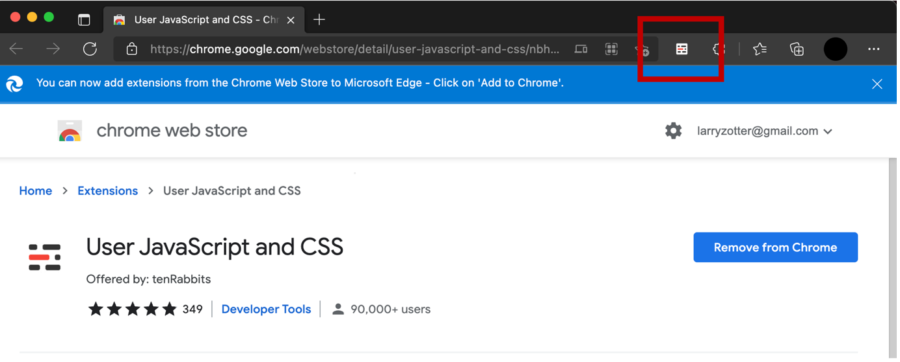Click on the browser extension icon, followed by the setting icon (shaped like a gear)
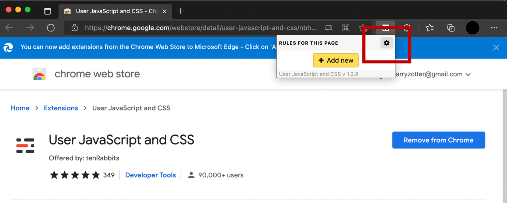A new page will open. Click on the “Settings” tab, followed by “Upload and apply” as shown.
When prompted, select the JSON file downloaded at the start of this guide.
To disable the tool, click on the icon next to the address bar, then disable all of the options shown:
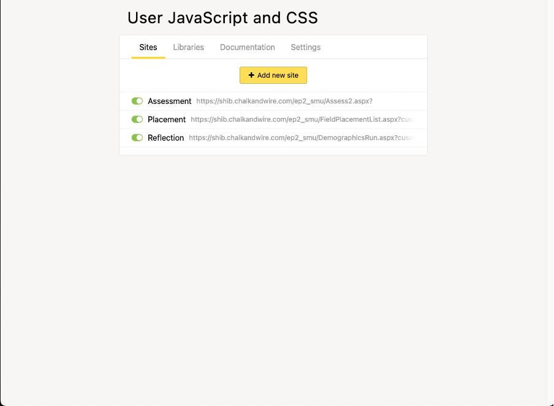Alternatively, you can uninstall the browser extension entirely.
After logging in, go to Experiential Placements.
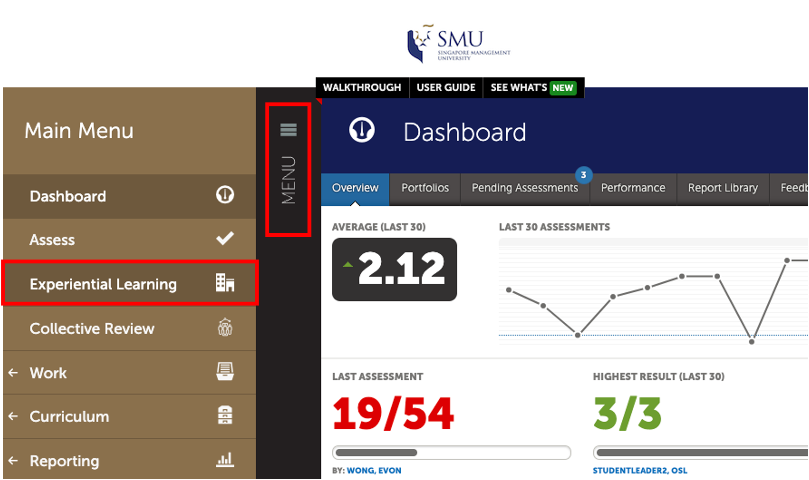Then click on green "?" icon on the top left corner. This will filter and sort the placements.
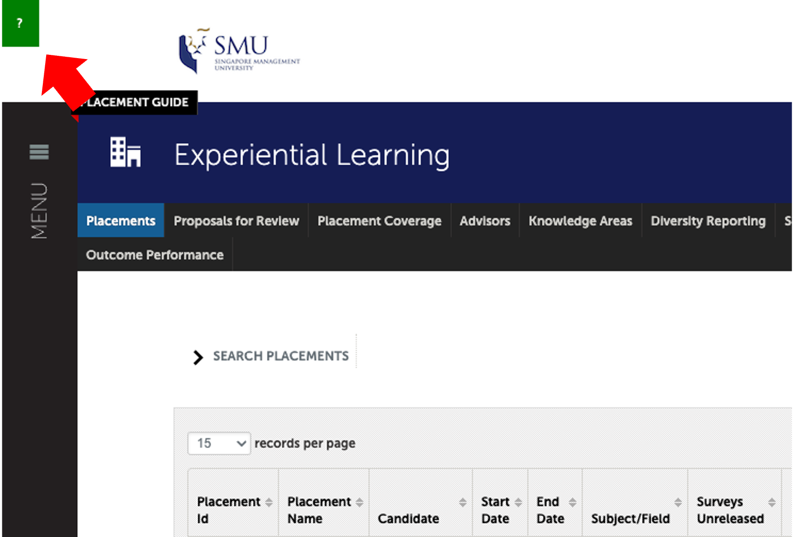Click on "search" on the bottom of the filter window. We also recommend checking the "Make These Options My Default" so that this process does not need to be repeated every time you log in to your account.
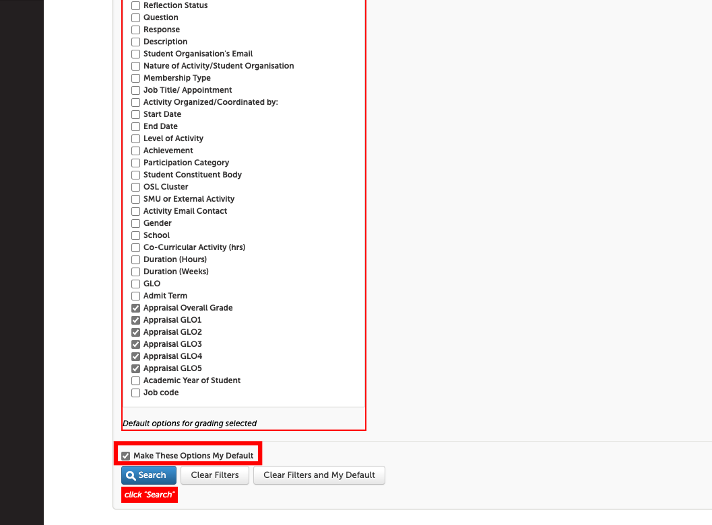Students that are ready to be assessed will have their text in green. Click on these entries to open the menu and click "Assess"
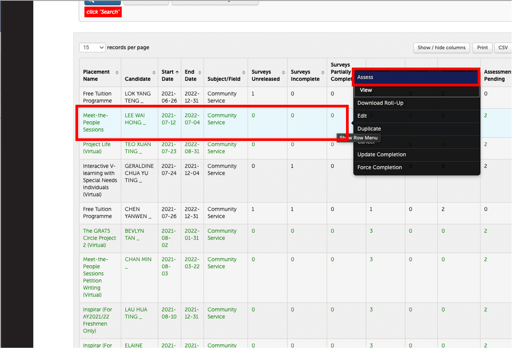There will be a status window in green on the right of each placement entry, after clicking "Assess". If the student has completed their reflection, you may click on "Reflection complete (click to view)"
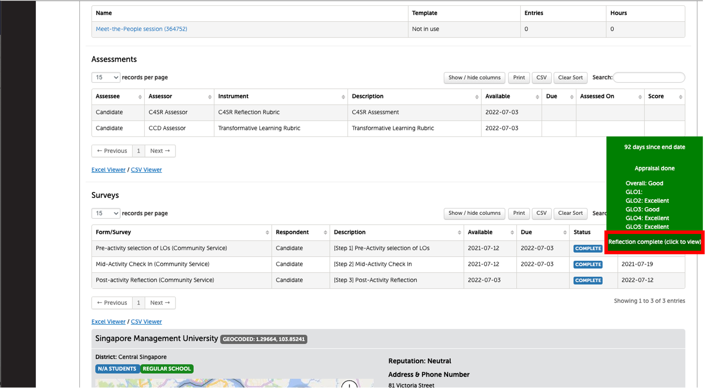This will open a new window with the student's Post-Activity Reflection. You may clcik on "Assess" on the bottom right of the screen.
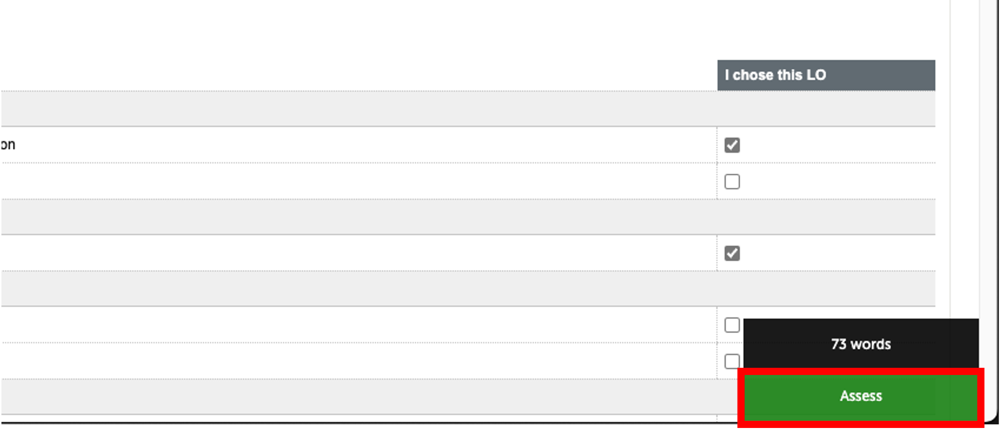This will generate a overlay that contains information such as the student's chosen GLOs, appraisal grading, and reflection. Click "Assessment" when you are ready to assess the student.
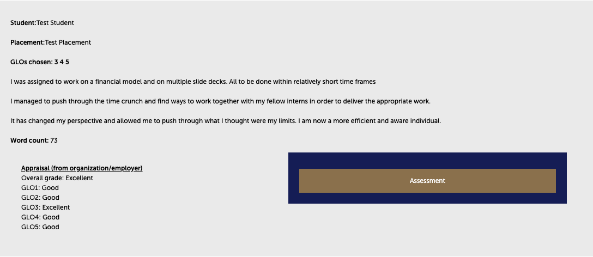After clicking "Assessment", you will be brought to the assessment instrument. Only the criteria to be assessed (as determined by the GLOs chosen by the student) will be displayed, and a default assessment of "Exposure" will be made.
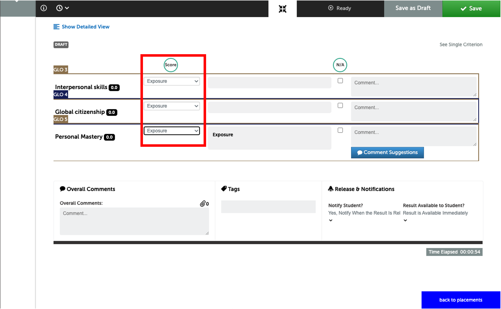Make your assessment, then click "Save" on the top right of the assessment page. Then, click "back to placements" on the bottom right of the screen to go back to the placements page.
Note: sometimes the "Save" button can appear as "Save and close", as shown:
When you are back on the placements page, you will see a "last accessed" label that will indicate which placement was last accessed, so that you may keep track of the placements you've looked at.
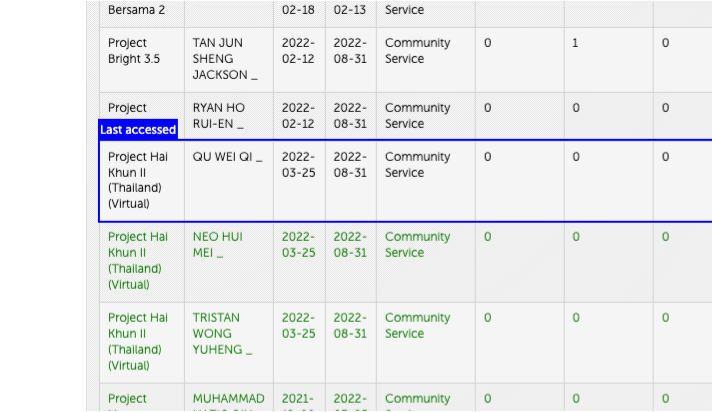Rinse and repeat.